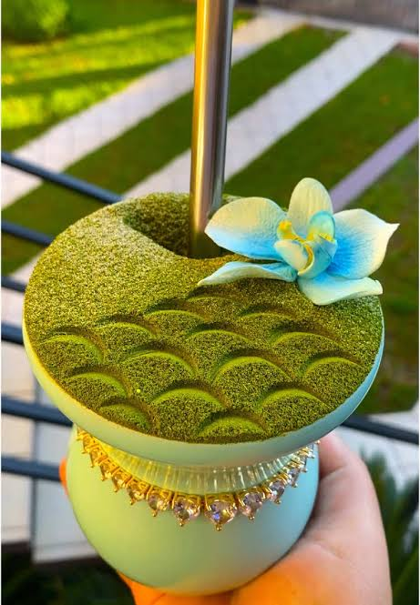
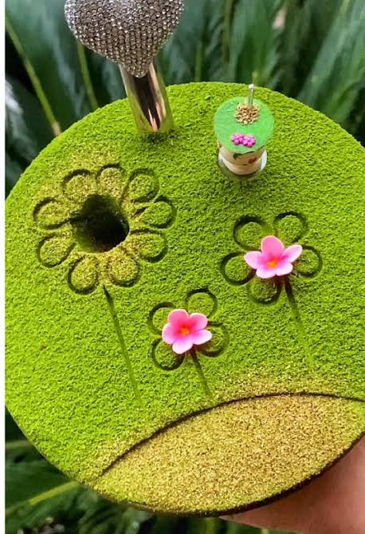
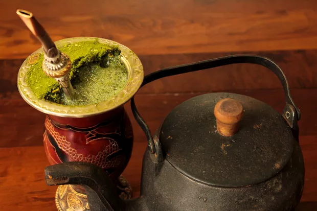

O Simbolismo e a Tradicao do Mate
O chimarrao e muito mais do que uma bebida quente; ele carrega um profundo significado cultural enraizado no Sul do Brasil, especialmente na cultura gaucha e na historia das terras paranaenses. Preparado com erva-mate (Ilex paraguariensis) servida em uma cuia e tomada atraves de uma bomba, o chimarrao simboliza a hospitalidade, o respeito e a memoria dos povos originarios e tropeiros que habitavam a regiao. O ato de preparar a bebida exige carinho e tecnica, transformando um ingrediente simples da terra em um verdadeiro patrimonio afetivo transmitido de geracao em geracao.

O Roda de Mate e a Uniao Social
A essencia do chimarrao esta no ato de compartilhar. O habito de "passar a cuia" em roda aproxima as pessoas, quebra barreiras e cria um espaao de conversa, acolhimento e convivencia comunitaria. Nas familias paranaenses, especialmente nas regioes de tradicao tropeira e no interior do estado, o mate esta presente nas primeiras horas da manha e nos finais de tarde, servindo como o pretexto perfeito para reunir pais, filhos e vizinhos para prosear sobre o dia. E uma tradicao que ensina sobre partilha e paciencia, ja que todos aguardam a sua vez de saborear a bebida na mesma cuia.

INSIRA AQUI UM TITULO SOBRE A IMPORTANCIA ARTISTICA E CULTURAL DO TEMA
INSIRA TEXTO SOBRE IMPORTANCIA DO TEMA PARA A ARTE E A CULTURA DO PARANÁ

Curiosidades
As Nuances do Mate: Chimarrao vs.
Embora ambos utilizem a erva-mate como base, o chimarrao e o terere possuem identidades e modos de preparo bem distintos. O chimarrao e consumido tradicionalmente com agua bem quente (sem ferve-la) e traz uma erva-mate moida mais fina e de cor verde-viva. Ja o terere e consumido com agua trincando de gelada e por vezes misturada com sucos citricos ou ervas aromaticas como menta, utilizando uma erva de moagem mais grossa. Enquanto o chimarrao aquece nos dias frios de inverno do Parana, o terere e a escolha perfeita para se refrescar durante as altas temperaturas do verao.
Curiosidades do Mate
O Parana ja foi o maior produtor de erva-mate do mundo e a bebida foi a grande responsavel pelo desenvolvimento economico do estado no seculo XIX. Cidades inteiras cresceram ao redor dos ciclos do mate, e a arvore da erva-mate ate hoje figura com destaque no brasao oficial do estado do Parana! Existe uma "etiqueta do chimarrao" que muitos seguem a risca! Ao participar de uma roda de mate, voce nunca deve mexer na bomba com as maos e, quando terminar de beber a sua vez, nao precisa dizer "obrigado" a quem preparou na tradicao, dizer obrigado significa que voce ja esta satisfeito e nao quer mais participar da roda.